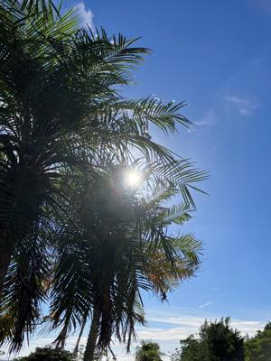

うるがいの話 ある日
最新: キヤノンのプリンターエラーB203【うるがいの話 ある日】とは 一日だけのプログです
『うるがいの話』の最新一日だけのプログで、通信料が少なく経済的だ。カニの画像をクリックすると全ての日付が載る『うるがいの話』サイトを表示します
|
|
【うるがいの話】 うるがい(ｳﾙｶﾞｲ urugai)とは、『もずくがに』の名前でとても大きくなります。 |
|---|---|
|
|
【カミマヤーの話】 猫のことを方言でマヤーといいます。カミマヤー（kamimayaa）とは、神の猫のことです。 |
|
【たながぁの音楽】 たながぁ（ﾀﾅｶﾞｰ tanagaa）とは手長えびのことで、何種類かあり大きいのは車 エビぐらいになります。 |

|
【ぶながぁの話】 ぶながぁ(ﾌﾞﾅｶﾞｰ bunagaa)とは、赤い髪の毛、赤い身体、そして身長は１ｍ２０ｃｍ ぐらい、川の蟹を食べているの目撃された。場所は沖縄県国頭郡大宜味村のと ある村僕の隣近所に住んでいる爺さんから、聞いた話です。 |
|
|
【ギーマの話】 ギーマ(giima)とは、山原の里山に咲くスズランに似た、 花を付けます。実は食べられます、 気が付くと口の周りが紫になっています。 |
2023年06月09日 (金）キヤノンのプリンターエラーB203
15:45

コドモが、次なるインドへの旅行のため手続きの資料を家にあるキヤノンのプ
リンター（ＭＧ６９３０）で印刷したところ、『Ｂ２０３』のエラーコードが
出た。お！、そろそろ買い替えかと、２０１６年５月に購入したプリンターな
のでコドモにお金を出してもらって新品を買おうと頼むと、ケチなコドモは別
にここで印刷しなくても・・・・と断れる。ま、仕方ない修理に出すかと準備
したところ、ヨメが昼過ぎの暑い時間はどうかね、明日の朝にしたらと言われ
とりあえず出かけないことにした。
夜中、もしかしてとプリンターの電源を入れるとあれほど操作しても解除しな
かった『Ｂ２０３』が消えた。お！、夜も遅いし明日印刷を試してみようと。
そして、元の場所にプリンターを戻し、無事印刷できた。コドモにその旨を連
絡すると午後から、家で一時間ほどごちゃごちゃ印刷処理をしていた。ネット
で調べると『Ｂ２０３』はソフトウェアの不具合のようだ。障害が起きる直前
にもプリンターでファームウェアのアップデートを要求されていた、さらに今
日の正常になってもファームウェアのアップデートしてとメッセージがでてい
たので、操作手順を調べバージョン２．０３０から２．０４０でアップデート
した。修理に出していたら、同じようなソフト的なの処理を行い、手数料をと
られたかもしれない。ま、良かった。まだ、使えそうである。イラッとした高
速充電器は、製品にセットでついていた２メートルのケーブルを純正のアイホ
ンの短いケーブルに替えたところ、充電が安定した。現象からみると、このや
たらと長い２メートルが不良品のようだ。ま、不具合が起きた時は、慌てず少
し間を置いて対処する手もあるかなと思った次第。
１５時３２分 ビットコインの総資産 ￥１０、７２２（↑１８）